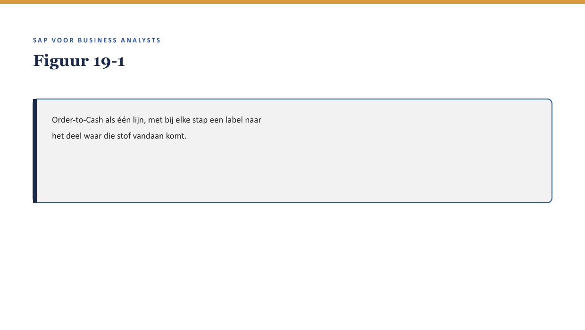

Deel 19 — Case: Order-to-Cash ontleed
Reader · Niveau 2 Professional · Cursus SAP voor Business Analysts · Ductus
Dit deel introduceert geen nieuwe concepten — het brengt deel 11 tot en met 18 samen in één end-to-end procesanalyse.
Leerdoelen
Na dit deel kun je:
- het volledige Order-to-Cash-proces voor een nieuwe polis end-to-end beschrijven, van BTX tot boeking;
- bij elke processtap aanwijzen welk deel uit 11-18 daar de onderliggende laag vormt;
- een end-to-end procesanalyse gebruiken om te beoordelen waar een fout zich het waarschijnlijkst zou voordoen;
- de ketentest-les uit de zustercursus (WGP 2.0, bevinding T7) toepassen op dit FS-PM-proces;
- een eigen end-to-end analyse opstellen voor een nieuw, vergelijkbaar scenario.
Studielast: één dagdeel klassikaal, circa drie uur zelfstudie.
1. Van losse delen naar één keten
Acht delen lang heeft niveau 2 FS-PM en zijn omgeving in losse lagen behandeld: BTX (11), configuratie (12), de financiële schaduw (15), documentflow (16), organisatiestructuur (17), output (18). Dit deel zet ze weer aan elkaar: Order-to-Cash — van een nieuwe polisaanvraag tot de eerste premie-incasso — als één doorlopende keten.

2. Waarom dit voor de BA telt
Waarom dit voor de BA telt. Een BA die alle acht lagen apart kent maar ze niet als keten kan doorzien, mist precies het soort inzicht dat bevinding T7 uit het WGP 2.0-dossier (↗ testcursus) blootlegde: elke partij testte tot haar eigen grens, en niemand testte de hele keten.
3. Order-to-Cash, stap voor stap
| Stap | Wat gebeurt er | Onderliggende laag |
|---|---|---|
| 1. Aanvraag | Een werkgever vraagt een nieuwe collectieve regeling aan | Fit-gap-context (↗ deel 9, niveau 1) |
| 2. BTX New Business | De polis wordt aangemaakt als BTX | Deel 11 |
| 3. Configuratie toegepast | Product Engine, TMF, BRFplus, BTS bepalen de details | Deel 12 |
| 4. Organisatietoewijzing | Determinatie wijst een verantwoordelijk team toe | Deel 17 |
| 5. Documentflow-koppeling | De BTX wordt gekoppeld aan de polis en eventuele vervolgacties | Deel 16 |
| 6. Bevestigingsoutput | Een bevestigingsbrief wordt gegenereerd en verstuurd | Deel 18 |
| 7. Financiële schaduw | Premie-incasso start via FS-CD, boeking in Accounting | Deel 15 |

4. Waar een fout zich het waarschijnlijkst voordoet
Met de lessen uit deel 3 §6, deel 4 §5, en deel 18 §5 kun je nu voorspellen waar in deze keten fouten het lastigst te detecteren zijn: niet bij de zichtbare stappen (1-2, waar iemand direct ziet wat er gebeurt), maar bij de overgangen tussen stappen — precies zoals een koppelvlak (↗ deel 7, niveau 1) een plek is waar iets kan “verdwijnen.” De overgang tussen stap 4 (organisatietoewijzing) en stap 6 (output) is bijvoorbeeld kwetsbaar: als determinatie een verouderde regel gebruikt (deel 17 §6), kan de bevestiging naar het verkeerde team of de verkeerde afzender lijken te komen.
Kernzin — In een keten van acht lagen zit het risico zelden in de lagen zelf, maar in de overgangen ertussen — precies zoals bevinding T7 (↗ testcursus) liet zien dat het WGP 2.0-incident niet in één component zat, maar in de overdracht tussen twee componenten.
5. Een end-to-end ketentest — wat zou het testen?
Zonder dit deel te laten overlappen met de zustercursus se testvak, is het voor een BA nuttig om te kunnen benoemen wat een goede end-to-end test van dit proces zou moeten dekken: elke stap in tabel §3, plus expliciet de overgangen ertussen — niet alleen “werkt stap 2” en “werkt stap 7” apart, maar “komt de output van stap 2 daadwerkelijk correct aan bij stap 3.”
6. Kruisverwijzingen
- ↗ Deel 11-18: elke laag van deze keten in detail.
- ↗ Testen en Kwaliteitsborging, hoofddossier: bevinding T7 als parallel voor het risico in overgangen.
- ↗ Deel 20: hetzelfde end-to-end perspectief, toegepast op FS-CM (Claims-to-Payment).
Kernbegrippen
Order-to-Cash · end-to-end procesanalyse · overgang tussen processtappen · ketentest
Samenvatting in vijf zinnen
- Order-to-Cash brengt acht losse FS-PM-lagen (deel 11-18) samen in één doorlopende keten, van aanvraag tot boeking.
- Elke stap in de keten heeft een herkenbare onderliggende laag uit eerdere delen.
- Risico’s zitten zelden in de lagen zelf, maar in de overgangen ertussen.
- Dit patroon is direct verwant aan bevinding T7 uit het WGP 2.0-dossier: niemand testte de volledige keten.
- Een goede end-to-end analyse dekt zowel elke stap als expliciet de overgangen ertussen.